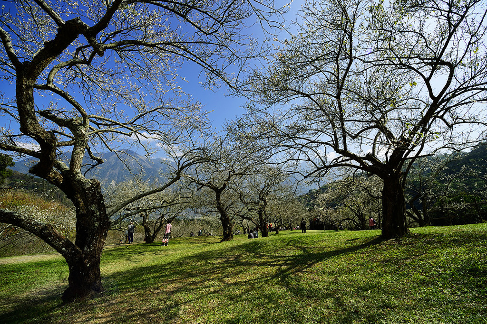

草坪頭觀光茶園 產茶季過後不久即是櫻花盛開季節，山櫻花夾道盛開，漫步於 櫻花小徑，欣賞滿放的粉紅櫻花、翠綠的茶園，與不時飄散的 薄霧景色，偶爾還可見到白色梨花夾雜其中，無論是睛天或陰 天，都能見到不一樣的粉櫻美景；來到信義鄉訪茶之餘，也不 妨把櫻花美景納入行程中 Read More
塔塔加夫妻樹 夫妻樹由兩棵成對紅檜枯木形成的神木景觀，位置恰好位在公路 彎道上，因此夫妻樹格外醒目。枯木的形成是在1963年，因森林 大火造成死亡，又於1996年遭到雷擊，與阿里山神木昔景相似。 如今夫妻樹是玉山國家公園熱門景點之一。 Read More
柳家梅園 又是臘月梅花飄香的季節；近幾年，賞花似乎已成為國人的重要 休閒活動之一南投縣信義鄉是台灣種植枚數最多的地區，是踏雪 尋梅的好去處因此，每年12月下旬至元月上旬的梅花盛開期，整 個南投縣信義鄉到處都是賞花人潮，盛況如舉辦嘉年華會般 Read More 
雙龍水源吊橋 位於南投縣信義鄉的雙龍瀑布，瀑布落差高約100公尺分為上瀑 與下瀑，似兩條蛟龍盤旋因而得其名，陡峭山壁落差製造出水煙 紛飛景象，雙龍瀑布旁現有一條水源吊橋，也是所謂的水管橋， 利用地形高度引水至另一端輸送至雙龍部落，懸吊於峽谷間的30 0公尺長吊橋，橋面由細鐵網組成，站在上頭下望景色驚險壯觀， 不過僅提供工作人員進入。 Read More